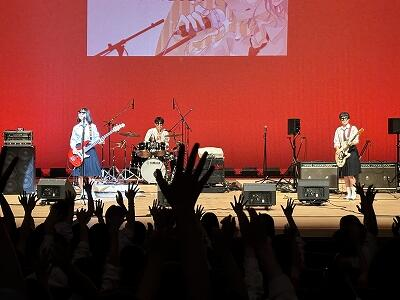
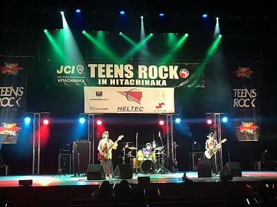
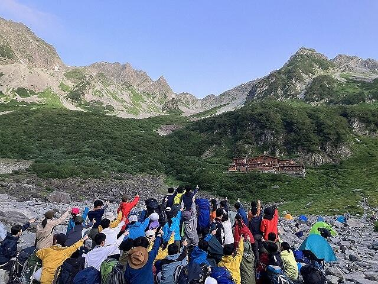
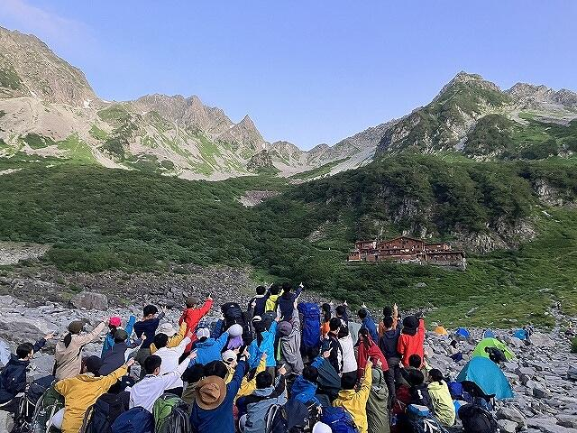
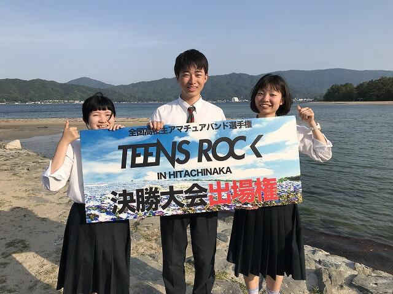
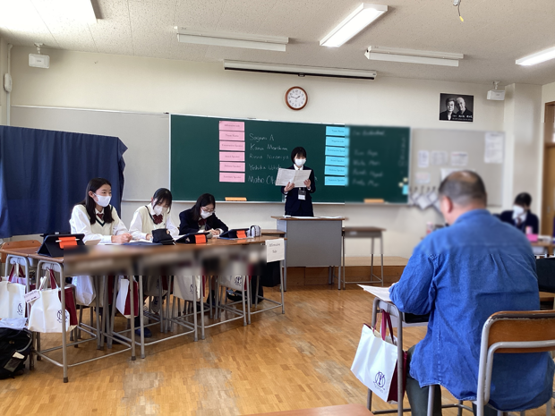
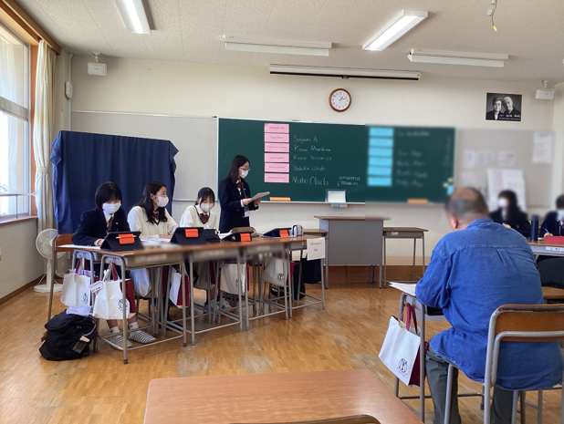
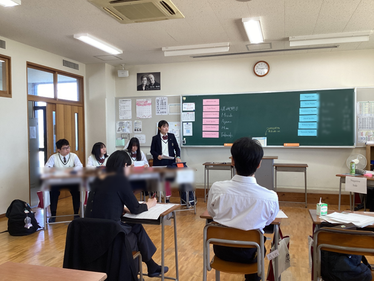
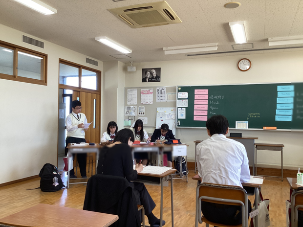

SAGANO BLOG
- >
- SAGANO BLOG
- >
- 部活動
2024年10月02日
午後からはロケット製作の仕上げを行った後、いよいよ屋外に出て順番に打ち上げ開始です。一時強かった雨もこのタイミングを見計らったかのように上がってくれました。
ロケットに火薬を装填し、自ら「3!、2!、1!」と秒読みの後発射ボタンを押すと、どのロケットも勢いよく打ち上がって行きました。パラシュートが開いて下降してきたロケットをナイスキャッチする生徒も多くいて、あちこちで歓声が上がっていました。
この後は砂川SAに立ち寄り、買い物等に費やした後にホテルへ戻ります。
2024年10月01日
朝食の様子です。早寝で食欲全開の生徒も、ギリギリまで眠っていた生徒も、しっかり食べてアクティビティ体験に備えます。
2024年09月15日
文化祭が終わり、日常生活が戻ってきました。
軽音楽部は文化祭の２日間は毎年音楽室でライブを行います。
３年生はこのライブで引退となりました。
たくさんの方から応援していただいたバンド「ハロー二世帯住宅」の活動も終了です。
夏休み中は・・・
和歌山城大ホールで行われた「第１回近畿高等学校軽音楽フェスティバル2024」で観客を盛り上げ、奨励賞を受賞。

ひたちなか市文化会館大ホールで行われた「TEENS ROCK 2024 ～GP FINAL IN HITACHINAKA～」に出場。

全国大会という大きな舞台で演奏できたのは、貴重な経験でした。
後輩たちにとっても憧れの先輩となりました。
ここからは進路実現に向けてがんばって！
2024年09月13日

９月に入り、芸術の秋のはずなのですが...
残暑厳しい中での制作が続きます。浴衣に少し色が入り、地元企業「和衣庵」の和裁士さんに襟の染め位置をチェックいただいているところです。柄の位置が合っているか、神妙な面持ちのデザイン工芸部の部長。


この作品は、京都府総合文化祭で10月末に展示される予定ですが、修学旅行や中間テストなど学校行事の関係で、9月中に完成させねばなりません。
...間に合うのでしょうか⁉
切羽詰まって制作してるのは、デザイン工芸部だけではありません。美術部さんも⁉
陶芸チームの作品は何とか割れずに素焼きができました。
次は本焼成です。窯から無事に出てこられますように...。祈るしかありません。
あらゆる意味でドキドキさせる、残暑よりも熱い生徒たちの芸術の秋。
ご一緒に見守っていただければ幸いです。
2024年09月11日


.png)


華道部です。
私たちは、小原流の先生にご指導いただいてお稽古しています。
２年生５名、１年生５名で、日々楽しく活動しています。
文化祭で、作品展示を行いました。
そして今年は、より多くの方に華道の魅力を知っていただくため、「生け花体験」を行いました。
基本の、たてるかたちです。
ご参加いただいた皆さんは、とても上手に生けておられました。
「お花を生けるのは初めですが、上手にできました」
「楽しかった」「癒やされました」
という声をいただきました。
見て楽しむだけでなく、花の美しさを引き出すことができる生け花を体験していただきました。
四季折々の草花を通じてその美しさをしることができる部活動です。
初心者大歓迎です！
2024年08月28日
8月27日に2学期の始業式・着任式を各HR教室への配信で行いました。
初めに着任式が行われ、新しくALTのウェスト・ブレンデン先生が着任されました。
次に2学期の始業式が行われました。
校長先生の式辞では、まず残暑や感染症拡大、台風接近について触れられ、安全に文化祭準備が進み、無事に本番が終えられるよう、一人一人が高い危機管理意識を持って行動するよう促されました。
また、夏休みは部活動や勉強、研修などを通して「ほんまもんの学び」と出会う絶好の機会であったこと、そして、夏休み中の「ほんもんの学び」に触れた経験を一過性のもので終わらせるのではなく、それを次のステップへとしっかりつなげる2学期として欲しいと述べられました。
「ほんまもんの学び」は学習だけでなく文化祭活動もその一つであり、良い作品を作り上げていく過程では色々な意見が出たり、考え方の違いがあったりしてなかなか思うように進まないこともあるはずだが、意見や考えが違ったときこそ発展・成長のチャンスだと考え、「対話」や「会話」を大切にし、「ほんまもんの学び」となる文化祭活動となることを願っていると述べられました。
その後、生徒指導部長からは、２学期のスタートにあたって、「時を守り、場を清め、礼を正す」の３つを改めて自分の言動を見つめ直すものさしにし、それでもうまくいかない時は周囲の人を信頼して欲しいとのお話や携帯電話のルール確認が行われ、きちんと規則を守って活動するよう促されました。また、限られた時間を有効活用し、今年の文化祭が素晴らしいものになるよう協力して、各クラスで準備を進めて欲しいと述べられました。
最後に伝達表彰がありました。


2024年08月27日
８月１日・２日、岐阜県高山市で行われた、第48回全国高等学校総合文化祭将棋部門兼第60回全国高等学校将棋選手権大会の結果報告です。
予選はスイス式トーナメント４回戦で行われ、３勝１敗で決勝トーナメント（15チーム）に進出しました。決勝トーナメント１戦目は兵庫県の白陵高校と対戦し、２勝１敗で勝利しました。２戦目は予選で敗北した神奈川県の横浜高校と再び対戦し、１勝２敗で惜しくも負けてしまいました。その結果、全国第５位として表彰していただきました。生徒たちはとても悔しそうでしたが、非常に立派な成績です。
対戦前の１コマ
11月には近畿高等学校総合文化祭も控えています。生徒たちは上位目指して頑張りたいと決意を新たにしていました。
2024年08月27日
嵯峨野高校ワンダーフォーゲル部夏合宿の報告です。
今年の夏合宿は、総勢47名で、８月５日（月）から８日（木）の３泊４日で実施しました。岳人たちの聖地、北アルプスの涸沢（からさわ）にテントを張り、目指したのは標高日本第９位の北穂高岳（3,106m）。１年生は初めての3,000mの世界、初めてのテント泊です。
今回の合宿には、現在看護師をされているワンダーフォーゲル部OGの方と、近畿大会優勝時ワンダーフォーゲル部部長であったOGの方にも参加いただき、さまざまな面で協力いただきました。
 

登山は非日常を体験できるスポーツです。合宿中の朝３時起床、５時出発、夜７時就寝なんて普段の生活ではほぼありません。天の川がはっきり見える満天の星空、朝の５分だけ見られるモルゲンロート、岩だらけの上で仲間と一緒に寝る、困難を乗り越えたからこそ見ることができる山頂の絶景。まさに「ほんまもん」の世界ばかりです。こんな体験は、当然普段できません。登山というスポーツだからこそ味わえることです。勝負を競い合うのでもなく、タイムで競い合うのでもなく、いかに安全に目的を達成できるかが大切になるスポーツです。こういう体験を高校生の間に、しかも岳人たちの聖地・涸沢で体験できたということは、合宿に参加した部員にとって大きな財産になると思います。そして、そういう体験ができたのは、家族の方々の理解があったからこそです。この場を借りて保護者等の皆さまにお礼申し上げます。また、私たちのために時間を割いていただき貴重な高山での登山活動についてアドバイスいただいた長野県警山岳遭難救助隊の皆様、慣れない北アルプス登山でいろいろとご迷惑をおかけしたにもかかわらず、私たちの登山活動を暖かく見守っていただいた岳人の皆様にも感謝いたします。
モルゲンロートに輝く涸沢（動画）（↓ 画像をクリック）
2024年08月19日
８月２日（金）と３日（土）の２日間、本校ESS部の１年生が一般社団法人パーラメンタリーディベート人財育成協会（ＰＤＡ）主催の全国高校即興型英語ディベート合宿・大会2024に参加しました。本大会はオンラインで開催され、日本全国から英語ディベートに取り組む高校が参加しました。

即興型英語ディベートでは、その場で与えられた論題に対して、賛成または反対の立場で15分間準備した後、英語によるディベートを行い、審査員が勝敗を判定します。
今回参加した１年生は、初めてのオンライン形式、初めての他校との試合で、最初は緊張した面持ちでしたが、全ての試合を懸命に戦い、予選ラウンド３戦中２勝と勝ち越すことができました。
引き続き嵯峨野高校ESS部では、実践的な英語力を身に付けるべく、様々な形式の英語ディベートに楽しみながら取り組んで参ります。
2024年08月06日
放送部は、８月２日(金)･３日(土)に岐阜県の多治見市で行われた第48回全国高等学校総合文化祭放送部門に、ビデオメッセージ小部門とオーディオメッセージ小部門の２部門で参加をしました。
夏の暑さで有名な多治見市ですが、京都人にとってはいつも通りの暑さでした。
 残念ながら入賞はなりませんでしたが、７月のNHK杯の大会の時と同様に、全国の多くの学校の放送部の人たちと、作品交換や卒業生の武田綾乃さん原作の「花は咲く、修羅の如く」の紹介で交流を行いました。
残念ながら入賞はなりませんでしたが、７月のNHK杯の大会の時と同様に、全国の多くの学校の放送部の人たちと、作品交換や卒業生の武田綾乃さん原作の「花は咲く、修羅の如く」の紹介で交流を行いました。
また、この秋の京都府高等学校総合文化祭の番組作成のためのインタビュー撮影も行い、多くの学校が快く応えて下さいました。お世話になった皆様、ありがとうございました。
 放送部は来年の全国総文香川大会にも出場できるよう頑張って参りますので、ご声援よろしくお願い致します。
放送部は来年の全国総文香川大会にも出場できるよう頑張って参りますので、ご声援よろしくお願い致します。
夏の暑さで有名な多治見市ですが、京都人にとってはいつも通りの暑さでした。

また、この秋の京都府高等学校総合文化祭の番組作成のためのインタビュー撮影も行い、多くの学校が快く応えて下さいました。お世話になった皆様、ありがとうございました。

2024年07月26日
放送部は、7月22日～25日に国立オリンピック記念青少年総合センターとNHKホールで行われた第71回NHK杯全国高校放送コンテストに、朗読部門１名、ラジオドキュメント部門、創作テレビドラマ部門で参加しました。
22日には東海道新幹線がトラブルのため夜半まで運休するというハプニングの中、約8時間かけて会場にたどり着きました。

朗読部門とラジオドキュメントは残念ながら準決勝進出はなりませんでしたが、創作テレビドラマ部門が準決勝に進出しました（全国ベスト20）。テレビ部門で準決勝に進出するのは、本校放送部としては初めてとなります。
最終結果は、制作奨励賞（11～20位）でしたが、NHKホールのスクリーンに学校名が映し出されるのは感慨もひとしおでした。

大会では他県の学校とも積極的に交流し、作品交換や、本校の先輩である武田綾乃さん原作の、放送部を舞台とした漫画「花は咲く、修羅の如く」（来年アニメ化されます）の紹介にも励みました。
来年も、一つでも多くの部門で準決勝に進めるよう頑張りますのでご声援よろしくお願い致します。
2024年07月26日
７月20日、本校ESS部は、京都市立日吉ヶ丘高校にて開催されたパーラメンタリーディベート（即興型英語ディベート）交流会に参加しました。

本校からは３チームが参加、それぞれ２試合を戦い、３チームとも入賞することができました。最後は各校代表で編成したチームによるエキシビジョンマッチも行われ、本校からも２名が参加しました。


３年生は高校生活最後の対外試合に悔いなく実力を発揮していました。２年生はそんな先輩の背中を追いかけながら、例年にもまして強いチームワークでディベートに取り組んでいる姿がありました。１年生にとっては初の校外試合でしたが、先輩たちや他校の生徒さんたち、ジャッジの先生方から多くのことを学び取る機会となりました。
昨年からさらに人数が増えた嵯峨野高校ESS部、今後も楽しみながら英語ディベートに取り組んでいきます。


2024年07月18日
７月１３日（土）～１４日（日）にかけて和歌山県のビッグホエールで行われました 近畿高等学校剣道大会に出場しました。
各府県の予選を勝ちあがってきた精鋭ばかりの学校を３校ずつのリーグに分け、３校のうち１校のみが進出できる決勝トーナメントを目指して戦います。本校の相手は、大阪府代表の金光大阪と和歌山県代表の和歌山工業でした。金光大阪は、練習試合で何回も対戦したことがありましたが、いつもかなりの大差で負けていました。しかし、今回は先鋒の選手から攻め続け、１本になりそうな惜しい技も繰り出すことができ、最後の大将に至るまでほぼ互角の戦いができました。残念ながら僅差の０－１で負けましたが、本校の選手たちは以前の対戦時とは全く別のチームになっていました。
次の対戦相手である和歌山工業は、和歌山県１位でインターハイに出場する超強豪校でしたが、選手たちは本気で勝つべく気合いを入れ直し、試合にのぞみました。試合開始から、全く気後れすることなく、強い気持ちで試合をし、相手を圧倒している時間帯も見られました。最終的に敗れはしましたが、それぞれが持ち味を発揮して精一杯戦っていました。
本人たちも「負けたことは悔しいですが、強い気持ちで思い切って攻めることができました」「１人１人が自分の役割を意識し、チームで戦う嵯峨野らしさが存分に発揮できたと思います」等の感想を述べるなど充実した様子が伺えました。６月のインターハイ予選後からの１ヶ月で技術の部分はもちろんのこと、気持ちの部分での成長が素晴らしかったと感じています。
また当日は、男子部員はもとより多くの保護者等の皆様も応援に駆けつけてくださり、熱い応援をしていただきました。今までのご支援および心からの声援本当にありがとうございました。
これで３年生の部員は完全に引退になりますが、次の目標に向けて今の粘り強さと目標に向かう気持ちの強さと集中力を発揮してくれるものだと確信しています。


2024年07月17日
この夏、将棋部は２つの全国大会に出場します。
１つは，８月１日・２日に岐阜県高山市で行われる第60回全国高等学校将棋選手権大会（第48回全国高等学校総合文化祭）です。５月に行われた第60回全国高等学校将棋京都府選手権大会の男子団体で昨年に引き続き優勝し、出場を決めました。昨年の全国大会では予選リーグ敗退でしたが、今年は上位入賞を目指します。

もう１つは８月20日・21日に福岡市で行われる第37回全国高等学校将棋竜王戦です。６月に行われた第37回全国高等学校将棋竜王戦京都府予選では、本校生徒が優勝・準優勝を独占しました。本校からは久々の竜王戦全国大会出場です。


全国大会直前となり、練習にも一層熱が入っています。

頑張ってきますので、温かい応援よろしくお願いします。
2024年06月11日
6月8･9日に行われた第63回京都府高等学校放送コンテスト兼第71回全国高校放送コンテスト京都大会において下記のとおりの結果となり、３部門でNHK杯全国高校放送コンテスト出場が決定しました。コロナ禍で中止の年を除いて16年連続の出場となります。
◎朗読部門 ２年生女子第2位
◎ラジオドキュメント部門 第1位
◎創作テレビドラマ部門 第2位
また、上記以外にも朗読部門で３年生女子が5位、１年生男子が9位、入賞者以外に３名が決勝出場、アナウンス部門で３年生女子が決勝出場、創作ラジオドラマ部門第3位の好成績を残しました。

全国大会は7月22日(月)から４日間にわたり、東京の代々木オリンピックセンター及びNHKホールにて開催されます。出場する全部門で準決勝進出が出来るよう頑張りますのでご声援よろしくお願い致します。
2024年06月10日
６月８日（土）に行われましたインターハイ兼近畿大会京都府予選会において、本校の女子が、団体の部で京都府第５位になり、見事近畿高等学校剣道大会への出場が決定しました。
１回戦の福知山成美戦は、４－１で危なげなく勝利しました。
続く２回戦は、シード校で強豪の山城高校でした。先鋒は粘りを見せましたが惜敗、次鋒は先月の高校総体で骨折した選手でしたが、痛みがある中サポーターをはめて出場し勝利、中堅は、すごくしっかりした上段の選手でしたが、先に１本を先取し、終了間際に１本取り返され引き分け、副将は、本校の女子部長が積極的に攻め勝利し、ここまで２－１と１勝リードしました。相手の５人目の大将は、すごく強い選手でしたが、本校の大将が粘りをみせ何とか引き分けに持ち込み、そのまま勝利し京都府第５位になり、近畿大会への出場を決めました。個々の力では格上の相手もチームで勝つときの理想となる勝ち方でした。本当に素晴らしい戦い方だったと思います。７月の近畿大会に向けてさらに力をつけていって欲しいと思います。
一方、昨年度１月の大会でシード入りしていた男子団体は、本校の選手の1本と思われましたが相手の１本に判定され、その１本を取り返そうと白熱した試合が展開されましたが、その１本を取り返せずに敗退しました。目標にしてきた近畿大会出場が叶わずものすごく残念だったと思います。
悔しい思いを胸に臨んだ翌日に行われた個人戦では、部長の選手が４回勝利し、出場選手110名中の第５位に入る大活躍でした。５回戦（コーﾄ決勝）では、残念ながら負けてしまいましたが、最終的に優勝した選手をあと１歩まで追い詰めるという素晴らしい試合内容でした。負けた悔しさはあるものの、本人のやり遂げたという言葉と顔つきが充実ぶりを物語っていました。後輩たちの良い刺激になったと思います。
３年生の部員はそれぞれ次の目標に向けて切り替えることになりますが、特に近畿大会に出場する部員については、週に何回か稽古に参加し、京都府の代表にふさわしい活躍をして欲しいと思います。
今まで応援ありがとうございました。これからもどうぞよろしくお願いいたします。
2024年06月08日
嵯峨野高校では、課題研究の成果を校内や府内で発表するのみならず、外部の学会でも発表しています。表題の学会には毎年参加しており、今年も１１名の生徒が４件の発表を行いました。会場は千葉の幕張メッセです。
学会前日は上野の国立科学博物館に赴き、科学的知見を深めました。国立科学博物館は「日本館」と「地球館」からなる、日本屈指の展示・所蔵量を誇る博物館であり、フロア１つでも通常の博物館の特別展を軽く上回る充実度です。生徒は研究発表だけでなく博物館見学も非常に楽しみにしており、充実した時間を過ごしました。例えば、初期の機械的計算機と言える「九元連立方程式求解機」をみた彼らは、そのアイデアにしきりに驚愕・感心していました。
参考：国立科学博物館「九元連立方程式求解機」
https://www.kahaku.go.jp/exhibitions/vm/past_parmanent/rikou/computer/kyugen.html
学会当日、宿泊所から幕張メッセに向かいました。入場手続きゲートを間違えてしまう場面もありましたが、無事会場に到着しました。 生徒は会場の大きさに驚いているようでした。


ポスター会場には JAXA や JAMSTEC、防災科研などの様々な研究機関・学会・大学や防災・計測関連企業の様々なブースがあり、クイズラリーも実施されていました。生徒は様々なブースを訪れて知見を深め、さらにノベルティグッズをたくさん集めていました。
午後、いよいよ「高校生ポスター発表」の部が始まりました。すごい熱気です！


{kind=link}
{kind=link}
{kind=link}
{kind=link}
{kind=link}
{kind=link}
{kind=link}
{kind=link}
{kind=link}
{kind=link}
{kind=link}
{kind=link}
{kind=link}
{kind=link}
{kind=link}
{kind=link}
{kind=link}
{kind=link}
{kind=link}
{kind=link}
{kind=link}
{kind=link}
{kind=link}
{kind=link}
{kind=link}
{kind=link}
{kind=link}
{kind=link}
{kind=link}
{kind=link}
{kind=link}
{kind=link}
{kind=link}
{kind=link}
{kind=link}
実は、彼らは発表会に向けてかなり時間をかけて準備してきました。校内や他の府立高校生との発表会に比べると、鋭い質問や指摘事項が多かったのですが、深いレベルでの指摘や議論を通して思考が深まり、苦労が報われた充実の二日間でした！
2024年06月03日
５月26日（日）に天橋立海水浴場で行われた「TEENS ROCK IN KYOTO 近畿地区大会」において、３年生のバンド「ハロー二世帯住宅」が優勝しました。

自分たちで作った曲を２曲披露し、オリジナリティーを評価していただきました。
この結果により、８月10日（土）に茨城県ひたちなか市で実施される「TEENS ROCK 2024～GP FINAL IN HITACHINAKA～」に出場することになりました。
ひたちなか市でも頑張ります！
2024年05月09日
5月4日、ESS部員15名（2年生8名、1年生7名）が滋賀県の近江兄弟社高校で開催された令和6年度GW（準備型）ディベート交流会に参加しました。
準備型英語ディベートでは事前に決められた論題について綿密な準備を行ってからディベートに臨みます。今年度の論題は「日本政府は原子力発電所を全て廃止すべきである。是か非か。」です。午前は専門家による講演を聞き、午後から、2年生は練習試合に臨み、1年生はディベートの基礎を学ぶ講習会に参加しました。他校の生徒と交流しながら、楽しく学び多き1日となりました。
 
 
２年生は全国大会に出場することを目指しています！嵯峨野高校ESS部、今年度も１年生から３年生まで一丸となって英語ディベートに取り組んで参ります！
〒616-8226
京都市右京区常盤段ノ上町15番地
TEL 075-871-0723 FAX 075-871-0724
E-mail [email protected]
Copyright (C) 京都府立嵯峨野高等学校 All Rights Reserved.